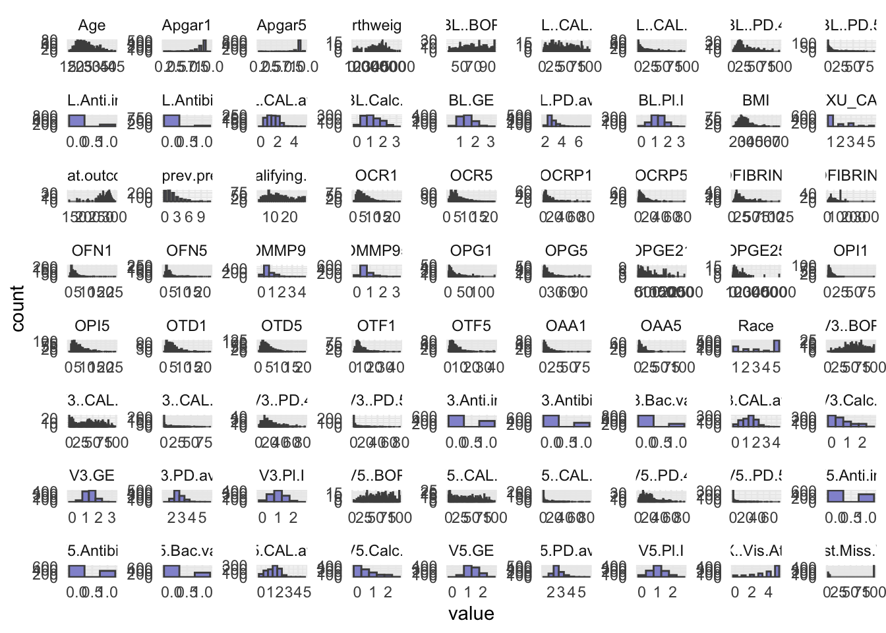
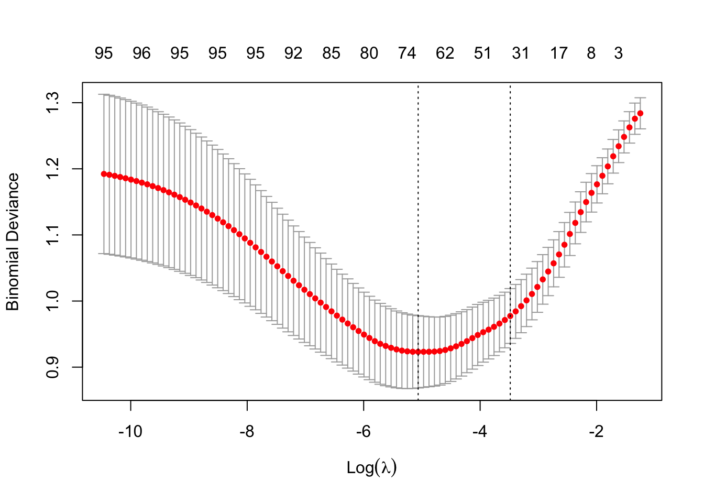
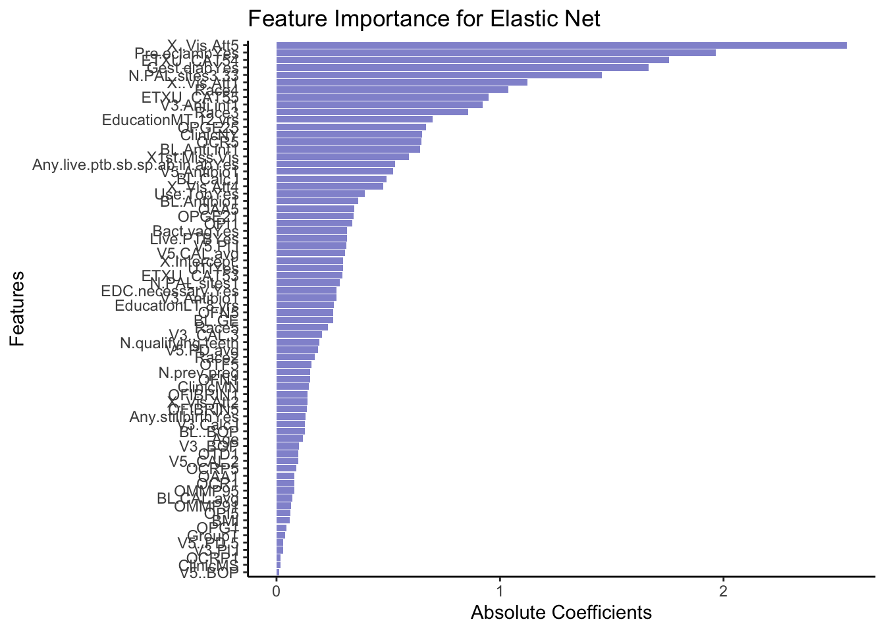
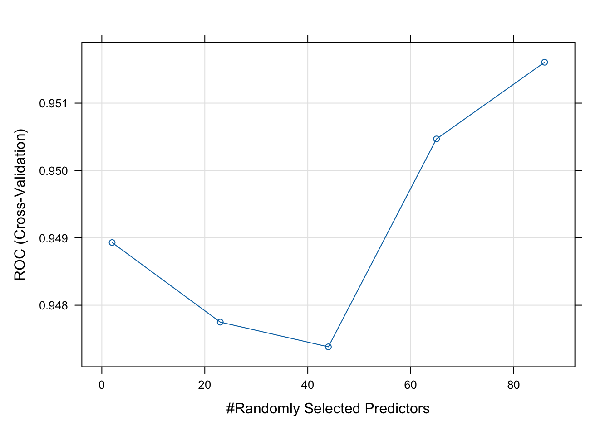

library(tidyverse)
library(caret)
library(glmnet)
library(MASS)
library(randomForest)Exercise 5B - Solutions
- Load the R packages needed for analysis:
Summary Statistics
- Load in the dataset
Obt_Perio_ML.Rdataand inspect it.
load(file = "../data/Obt_Perio_ML.Rdata")- Do some basic summary statistics and distributional plots to get a feel for the data. Which types of variables do we have?
# Reshape data to long format for ggplot2
long_data <- optML %>%
dplyr::select(where(is.numeric)) %>%
pivot_longer(cols = everything(),
names_to = "variable",
values_to = "value")
# Plot histograms for each numeric variable in one grid
ggplot(long_data, aes(x = value)) +
geom_histogram(binwidth = 0.5, fill = "#9395D3", color ='grey30') +
facet_wrap(~ variable, scales = "free") +
theme_minimal()
- Some of the numeric variables are actually categorical. We have identified them in the
facColsvector. Here, we change their type from numeric to character (since the other categorical variables are of this type). This code is sightly different from changing the type to factor, why we have written the code for you. Try to understand what is going on.
facCols <- c("Race",
"ETXU_CAT5",
"BL.Anti.inf",
"BL.Antibio",
"V3.Anti.inf",
"V3.Antibio",
"V3.Bac.vag",
"V5.Anti.inf",
"V5.Antibio",
"V5.Bac.vag",
"X..Vis.Att")
optML <- optML %>%
mutate(across(all_of(facCols), as.character))
head(optML)# A tibble: 6 × 89
PID Apgar1 Apgar5 Birthweight GA.at.outcome Any.SAE. Clinic Group Age
<chr> <dbl> <dbl> <dbl> <dbl> <chr> <chr> <chr> <dbl>
1 P10 9 9 3107 278 No NY C 30
2 P170 9 9 3040 286 No MN C 20
3 P280 8 9 3370 282 No MN T 29
4 P348 9 9 3180 275 No KY C 18
5 P402 8 9 2615 267 No KY C 18
6 P209 8 9 3330 284 No MN C 18
# ℹ 80 more variables: Race <chr>, Education <chr>, Public.Asstce <chr>,
# BMI <dbl>, Use.Tob <chr>, N.prev.preg <dbl>, Live.PTB <chr>,
# Any.stillbirth <chr>, Any.live.ptb.sb.sp.ab.in.ab <chr>,
# EDC.necessary. <chr>, N.qualifying.teeth <dbl>, BL.GE <dbl>, BL..BOP <dbl>,
# BL.PD.avg <dbl>, BL..PD.4 <dbl>, BL..PD.5 <dbl>, BL.CAL.avg <dbl>,
# BL..CAL.2 <dbl>, BL..CAL.3 <dbl>, BL.Calc.I <dbl>, BL.Pl.I <dbl>,
# V3.GE <dbl>, V3..BOP <dbl>, V3.PD.avg <dbl>, V3..PD.4 <dbl>, …- Make count tables of your categorical/factor variables, are they balanced?
# Count observations per level/group for each categorical variable
factor_counts <- optML[,-1] %>%
dplyr::select(where(is.character)) %>%
pivot_longer(everything(), names_to = "Variable", values_to = "Level") %>%
count(Variable, Level, name = "Count")
factor_counts# A tibble: 66 × 3
Variable Level Count
<chr> <chr> <int>
1 Any.SAE. No 865
2 Any.SAE. Yes 135
3 Any.live.ptb.sb.sp.ab.in.ab No 432
4 Any.live.ptb.sb.sp.ab.in.ab Yes 568
5 Any.stillbirth No 894
6 Any.stillbirth Yes 106
7 BL.Anti.inf 0 853
8 BL.Anti.inf 1 147
9 BL.Antibio 0 924
10 BL.Antibio 1 76
# ℹ 56 more rowsPart 1: Elastic Net Regression
- As you will use the response
Preg.ended...37.wk, you should remove the other five possible outcome variables measures from your dataset.
optML <- optML %>%
dplyr::select(!c(Apgar1, Apgar5, GA.at.outcome, Birthweight, Any.SAE.))- Elastic net regression can be sensitive to large differences in the range of numeric/integer variables, as such these variables should be scaled. Scale all numeric/integer variables in your dataset.
optML <- optML %>%
mutate(across(where(is.numeric), scale))- Split your dataset into train and test set, you should have 70% of the data in the training set and 30% in the test set. How you chose to split is up to you, BUT afterwards you should ensure that for the categorical/factor variables all levels are represented in both sets.
# Set seed
set.seed(123)
# Training set
train <- optML %>%
sample_frac(0.70)
# Check group levels
train_counts <- train[,-1] %>%
dplyr::select(where(is.character)) %>%
pivot_longer(everything(), names_to = "Variable", values_to = "Level") %>%
count(Variable, Level, name = "Count")
train_counts# A tibble: 64 × 3
Variable Level Count
<chr> <chr> <int>
1 Any.live.ptb.sb.sp.ab.in.ab No 302
2 Any.live.ptb.sb.sp.ab.in.ab Yes 398
3 Any.stillbirth No 629
4 Any.stillbirth Yes 71
5 BL.Anti.inf 0 606
6 BL.Anti.inf 1 94
7 BL.Antibio 0 649
8 BL.Antibio 1 51
9 Bact.vag No 620
10 Bact.vag Yes 80
# ℹ 54 more rowstest <- anti_join(optML, train, by = 'PID')
# Check group levels
#test_counts <- optML[,-1] %>%
# dplyr::select(where(is.character)) %>%
# pivot_longer(everything(), names_to = "Variable", values_to = "Level") %>%
# count(Variable, Level, name = "Count")
#test_counts- After dividing into train and test set pull out the outcome variable,
Preg.ended...37.wk, into its own vector for both datasets. Name thesey_trainandy_test.
y_train <- train %>%
pull(Preg.ended...37.wk)
y_test <- test %>%
pull(Preg.ended...37.wk)- Remove the outcome variable,
Preg.ended...37.wk, from the train and test set, as well asPID(if you have not already done so), as we should obviously not use this for training or testing.
train <- train %>%
dplyr::select(-c(PID, Preg.ended...37.wk))
test <- test %>%
dplyr::select(-c(PID, Preg.ended...37.wk))You will employ the package glmnet to perform Elastic Net Regression. The main function from this package is glmnet() which we will use to fit the model. Additionally, you will also perform cross validation with cv.glmnet() to obtain the best value of the model hyper-parameter, lambda (\(λ\)).
As we are working with a mix of categorical and numerical predictors, it is advisable to dummy-code the variables. You can easily do this by creating a model matrix for both the test and train set.
- Create the model matrix needed for input to
glmnet()andcv.glmnet().
modTrain <- model.matrix(~ ., data = train)
modTest <- model.matrix(~ ., data = test)- Create your Elastic Net Regression model with
glmnet().
EN_model <- glmnet(modTrain, y_train, alpha = 0.5, family = "binomial")- Use
cv.glmnet()to attain the best value of the hyperparameter lambda (\(λ\)). Remember to set a seed for reproducible results.
set.seed(123)
cv_model <- cv.glmnet(modTrain, y_train, alpha = 0.5, family = "binomial")- Plot all the values of lambda tested during cross validation by calling
plot()on the output of yourcv.glmnet(). Extract the best lambda value from thecv.glmnet()model and save it as an object.
plot(cv_model)
bestLambda <- cv_model$lambda.minNow, let’s see how well your model performed.
- Predict if an individual is likely to give birth before the 37th week using your model and your test set. See pseudo-code below
y_pred <- predict(EN_model, s = bestLambda, newx = modTest, type = 'class')- Just like for the logistic regression model you can calculate the accuracy of the prediction by comparing it to
y_testwithconfusionMatrix(). Do you have a good accuracy? N.B look at the 2x2 contingency table, what does it tell you?
y_pred <- as.factor(y_pred)
caret::confusionMatrix(y_pred, y_test)Confusion Matrix and Statistics
Reference
Prediction 0 1
0 170 27
1 35 68
Accuracy : 0.7933
95% CI : (0.743, 0.8377)
No Information Rate : 0.6833
P-Value [Acc > NIR] : 1.448e-05
Kappa : 0.533
Mcnemar's Test P-Value : 0.374
Sensitivity : 0.8293
Specificity : 0.7158
Pos Pred Value : 0.8629
Neg Pred Value : 0.6602
Prevalence : 0.6833
Detection Rate : 0.5667
Detection Prevalence : 0.6567
Balanced Accuracy : 0.7725
'Positive' Class : 0
- Lastly, let’s extract the variables which were retained in the model (e.g. not penalized out). We do this by calling the coefficient with
coef()on our model. See pseudo-code below.
coeffs <- coef(EN_model, s = bestLambda)
# Convert coefficients to a data frame for easier viewing
coeffsDat <- as.data.frame(as.matrix(coeffs)) %>%
rownames_to_column(var = 'VarName')- Make a plot that shows the absolute importance of the variables retained in your model. This could be a barplot with variable names on the y-axis and the length of the bars denoting absolute size of coefficient.
# Make dataframe ready for plotting, remove intercept and coeffcients that are zero
coeffsDat <- coeffsDat %>%
mutate(AbsImp = abs(s1)) %>%
arrange(AbsImp) %>%
mutate(VarName = factor(VarName, levels=VarName)) %>%
filter(AbsImp > 0 & VarName != "(Intercept)")
# Plot
ggplot(coeffsDat, aes(x = VarName, y = AbsImp)) +
geom_bar(stat = "identity", fill = "#9395D3") +
coord_flip() +
labs(title = "Feature Importance for Elastic Net",
x = "Features",
y = "Absolute Coefficients") +
theme_classic()
- Now repeat what you just did above, but this time instead of using
Preg.ended...37.wkas outcome, try using a continuous variable, such asGA.at.outcome. N.B remember this means that you should evaluate the model using the RMSE and a scatter plot instead of the accuracy!
Part 2: Random Forest
Now, lets make a Random Forest. We will continue using the Obt_Perio_ML.Rdata with Preg.ended...37.wk as outcome.
- Just like in the section on Elastic Net above, remove the outcome variables you will not be using and split the dataset into test and train set - this time keep the outcome variable
Preg.ended...37.wkin the dataset. Remember to remove thePIDcolumn before training!
load(file = "../data/Obt_Perio_ML.Rdata")
optML <- optML %>%
mutate(Preg.ended...37.wk = factor(Preg.ended...37.wk, levels = c(0, 1), labels = c("No", "Yes")))optML <- optML %>%
dplyr::select(-c(Apgar1, Apgar5, GA.at.outcome, Birthweight, Any.SAE.))set.seed(123)
# Training set
train <- optML %>%
sample_frac(0.70)
test <- anti_join(optML, train, by = 'PID')
train <- train %>%
dplyr::select(-PID)
test <- test %>%
dplyr::select(-PID)- Set up a Random Forest model with cross-validation. See pseudo-code below. Remember to set a seed.
set.seed(123)
# Set up cross-validation: 5-fold CV
RFcv <- trainControl(
method = "cv",
number = 5,
classProbs = TRUE,
summaryFunction = twoClassSummary,
savePredictions = "final"
)
# Train Random Forest
set.seed(123)
rf_model <- train(
Preg.ended...37.wk ~ ., # formula interface
data = train,
method = "rf", # random forest
trControl = RFcv,
metric = "ROC", # optimize AUC
#preProcess = c("center", "scale"), # optional
tuneLength = 5 # try 5 different mtry values
)
# Model summary
print(rf_model)Random Forest
700 samples
82 predictor
2 classes: 'No', 'Yes'
No pre-processing
Resampling: Cross-Validated (5 fold)
Summary of sample sizes: 561, 560, 559, 560, 560
Resampling results across tuning parameters:
mtry ROC Sens Spec
2 0.9489303 1.0000000 0.8617908
23 0.9477493 0.9870033 0.8744681
44 0.9473824 0.9783544 0.8743794
65 0.9504678 0.9762038 0.8786348
86 0.9516068 0.9675316 0.8786348
ROC was used to select the optimal model using the largest value.
The final value used for the model was mtry = 86.- Plot your model fit. How does your model improve when you add 10, 20, 30, etc. predictors?
# Best parameters
rf_model$bestTune mtry
5 86# Plot performance
plot(rf_model)
- Use your test set to evaluate your model performance. How does the random forest compare to the elastic net regression?
# Predict class probabilities
y_pred <- predict(rf_model, newdata = test, type = "prob")
y_pred <- as.factor(ifelse(y_pred$Yes > 0.5, "Yes", "No"))
caret::confusionMatrix(y_pred, test$Preg.ended...37.wk)Confusion Matrix and Statistics
Reference
Prediction No Yes
No 200 5
Yes 5 90
Accuracy : 0.9667
95% CI : (0.9396, 0.9839)
No Information Rate : 0.6833
P-Value [Acc > NIR] : <2e-16
Kappa : 0.923
Mcnemar's Test P-Value : 1
Sensitivity : 0.9756
Specificity : 0.9474
Pos Pred Value : 0.9756
Neg Pred Value : 0.9474
Prevalence : 0.6833
Detection Rate : 0.6667
Detection Prevalence : 0.6833
Balanced Accuracy : 0.9615
'Positive' Class : No
- Extract the predictive variables with the greatest importance from your fit.
varImpOut <- varImp(rf_model)
varImpOut$importance Overall
ClinicMN 0.28829380
ClinicMS 0.08531874
ClinicNY 0.00000000
GroupT 1.07928446
Age 10.07240535
Race 8.80554719
EducationLT 8 yrs 1.00267684
EducationMT 12 yrs 11.89503411
Public.AsstceYes 0.32547600
BMI 17.14493555
Use.TobYes 0.93360319
N.prev.preg 7.18283216
Live.PTBYes 0.66173901
Any.stillbirthYes 0.45096245
Any.live.ptb.sb.sp.ab.in.abYes 2.29188038
EDC.necessary.Yes 0.99830824
N.qualifying.teeth 6.22248572
BL.GE 17.08238031
BL..BOP 21.25428834
BL.PD.avg 8.55879761
BL..PD.4 16.60436630
BL..PD.5 7.86271337
BL.CAL.avg 5.38848754
BL..CAL.2 10.93763207
BL..CAL.3 7.66267752
BL.Calc.I 16.55322925
BL.Pl.I 18.97386933
V3.GE 8.49168429
V3..BOP 13.16516679
V3.PD.avg 10.98797558
V3..PD.4 11.45223757
V3..PD.5 5.15730509
V3.CAL.avg 7.18719557
V3..CAL.2 8.20104082
V3..CAL.3 6.53037740
V3.Calc.I 11.77132909
V3.Pl.I 10.67073735
V5.GE 19.81274399
V5..BOP 15.88170278
V5.PD.avg 13.79948005
V5..PD.4 14.54736293
V5..PD.5 10.37373918
V5.CAL.avg 16.32330976
V5..CAL.2 9.75285428
V5..CAL.3 14.94613503
V5.Calc.I 10.58727260
V5.Pl.I 30.99189383
N.PAL.sites1 0.56069981
N.PAL.sites3-33 0.16453921
Bact.vagYes 0.37261426
Gest.diabYes 12.56167674
UTIYes 2.39344325
Pre.eclampYes 100.00000000
BL.Anti.inf 1.05967811
BL.Antibio 0.70625225
V3.Anti.inf 14.78301202
V3.Antibio 3.32100410
V3.Bac.vag 1.20343079
V5.Anti.inf 0.42436300
V5.Antibio 2.17934136
V5.Bac.vag 0.98530726
X..Vis.Att 84.09386777
X1st.Miss.Vis 6.10011462
OAA1 15.05230148
OCR1 17.64066750
OFN1 14.44055733
OPG1 35.49263153
OPI1 49.02466848
OTD1 30.90159839
OTF1 17.66169583
OCRP1 25.68160225
OPGE21 48.56993592
OMMP91 32.19459414
OFIBRIN1 25.33219646
OAA5 33.61847538
OCR5 56.15240845
OFN5 40.00491564
OPG5 51.88932333
OPI5 42.36834783
OTD5 15.66229106
OTF5 44.52703717
OCRP5 21.79824614
OPGE25 31.84668616
OMMP95 26.57561280
ETXU_CAT5 4.08094946
OFIBRIN5 32.77152764varImportance <- as.data.frame(as.matrix(varImpOut$importance)) %>%
rownames_to_column(var = 'VarName') %>%
arrange(desc(Overall))
varImportance VarName Overall
1 Pre.eclampYes 100.00000000
2 X..Vis.Att 84.09386777
3 OCR5 56.15240845
4 OPG5 51.88932333
5 OPI1 49.02466848
6 OPGE21 48.56993592
7 OTF5 44.52703717
8 OPI5 42.36834783
9 OFN5 40.00491564
10 OPG1 35.49263153
11 OAA5 33.61847538
12 OFIBRIN5 32.77152764
13 OMMP91 32.19459414
14 OPGE25 31.84668616
15 V5.Pl.I 30.99189383
16 OTD1 30.90159839
17 OMMP95 26.57561280
18 OCRP1 25.68160225
19 OFIBRIN1 25.33219646
20 OCRP5 21.79824614
21 BL..BOP 21.25428834
22 V5.GE 19.81274399
23 BL.Pl.I 18.97386933
24 OTF1 17.66169583
25 OCR1 17.64066750
26 BMI 17.14493555
27 BL.GE 17.08238031
28 BL..PD.4 16.60436630
29 BL.Calc.I 16.55322925
30 V5.CAL.avg 16.32330976
31 V5..BOP 15.88170278
32 OTD5 15.66229106
33 OAA1 15.05230148
34 V5..CAL.3 14.94613503
35 V3.Anti.inf 14.78301202
36 V5..PD.4 14.54736293
37 OFN1 14.44055733
38 V5.PD.avg 13.79948005
39 V3..BOP 13.16516679
40 Gest.diabYes 12.56167674
41 EducationMT 12 yrs 11.89503411
42 V3.Calc.I 11.77132909
43 V3..PD.4 11.45223757
44 V3.PD.avg 10.98797558
45 BL..CAL.2 10.93763207
46 V3.Pl.I 10.67073735
47 V5.Calc.I 10.58727260
48 V5..PD.5 10.37373918
49 Age 10.07240535
50 V5..CAL.2 9.75285428
51 Race 8.80554719
52 BL.PD.avg 8.55879761
53 V3.GE 8.49168429
54 V3..CAL.2 8.20104082
55 BL..PD.5 7.86271337
56 BL..CAL.3 7.66267752
57 V3.CAL.avg 7.18719557
58 N.prev.preg 7.18283216
59 V3..CAL.3 6.53037740
60 N.qualifying.teeth 6.22248572
61 X1st.Miss.Vis 6.10011462
62 BL.CAL.avg 5.38848754
63 V3..PD.5 5.15730509
64 ETXU_CAT5 4.08094946
65 V3.Antibio 3.32100410
66 UTIYes 2.39344325
67 Any.live.ptb.sb.sp.ab.in.abYes 2.29188038
68 V5.Antibio 2.17934136
69 V3.Bac.vag 1.20343079
70 GroupT 1.07928446
71 BL.Anti.inf 1.05967811
72 EducationLT 8 yrs 1.00267684
73 EDC.necessary.Yes 0.99830824
74 V5.Bac.vag 0.98530726
75 Use.TobYes 0.93360319
76 BL.Antibio 0.70625225
77 Live.PTBYes 0.66173901
78 N.PAL.sites1 0.56069981
79 Any.stillbirthYes 0.45096245
80 V5.Anti.inf 0.42436300
81 Bact.vagYes 0.37261426
82 Public.AsstceYes 0.32547600
83 ClinicMN 0.28829380
84 N.PAL.sites3-33 0.16453921
85 ClinicMS 0.08531874
86 ClinicNY 0.00000000- Make a logistic regression using the same dataset (you already have your train data, test data). How do the results of Elastic Net regression and Random Forest compare to the output of your glm.
# Model
model1 <- glm(Preg.ended...37.wk ~ ., data = train, family = 'binomial')
# Filter for significant p-values and convert to tibble
model1out <- coef(summary(model1)) %>%
as.data.frame() %>%
rownames_to_column(var = 'VarName') %>%
filter(`Pr(>|z|)` <= 0.05 & VarName != "(Intercept)")
model1out VarName Estimate Std. Error z value
1 EducationMT 12 yrs 0.961956470 0.3382249163 2.844132
2 Any.live.ptb.sb.sp.ab.in.abYes 0.720906039 0.3153296987 2.286198
3 BL.Calc.I 1.026477452 0.4900989813 2.094429
4 V5.CAL.avg 3.110659656 1.2473092305 2.493896
5 V5..CAL.2 -0.098574105 0.0273704946 -3.601473
6 V5.Pl.I -1.338674452 0.5689180486 -2.353018
7 N.PAL.sites3-33 -2.331440689 0.7140054954 -3.265298
8 Gest.diabYes 1.830763333 0.6214980869 2.945726
9 UTIYes 0.821778414 0.3467958330 2.369632
10 Pre.eclampYes 2.566754720 0.4750007799 5.403685
11 X..Vis.Att -0.927874732 0.2340978787 -3.963619
12 OPGE21 0.001396325 0.0004603115 3.033435
13 OCR5 -0.251528837 0.0787526271 -3.193910
14 OPGE25 -0.002095017 0.0006322809 -3.313427
Pr(>|z|)
1 4.453253e-03
2 2.224269e-02
3 3.622179e-02
4 1.263495e-02
5 3.164189e-04
6 1.862173e-02
7 1.093490e-03
8 3.221972e-03
9 1.780581e-02
10 6.528545e-08
11 7.382213e-05
12 2.417867e-03
13 1.403597e-03
14 9.216003e-04# Compare output from Elastic Net with output from glm model
intersect(as.character(coeffsDat$VarName), model1out$VarName) %>%
sort() [1] "Any.live.ptb.sb.sp.ab.in.abYes" "BL.Calc.I"
[3] "Gest.diabYes" "OCR5"
[5] "OPGE21" "OPGE25"
[7] "Pre.eclampYes" "UTIYes"
[9] "V5..CAL.2" "V5.CAL.avg"
[11] "V5.Pl.I"